De los muy escasos temas de interés que captan mi atención, me agrada el arte digital, especialmente las estéticas de Internet en las que la comprensión convencional no alcanza a definir o prefieres salir corriendo. Toca hacer una lista sobre algunas estéticas, que no te importa pero así son las cosas dado que esta página es mía:
| Estética | Características | Ejemplo visual | Supervivencia 101 |
|---|---|---|---|
| Dreamcore |
|
 |
Quédate a vivir ahí hasta morir de inanición. |
| Weirdcore |
|
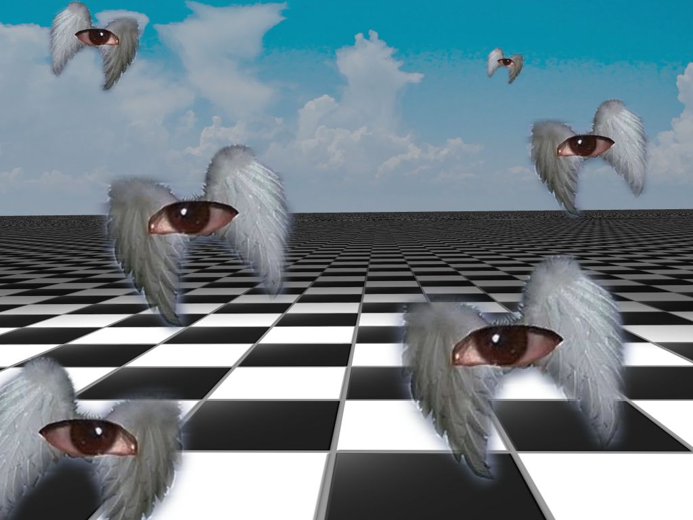 | Míralos de regreso, no pasa nada. |
| Bastardcore |
|
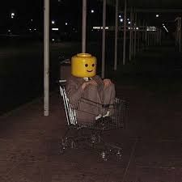 | Apaga el Bonfire. |
| After Hours |
|
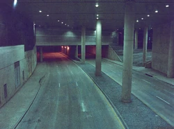 | Tú relajao', ahorita pasa el micro. |
| Dark Paradise |
|
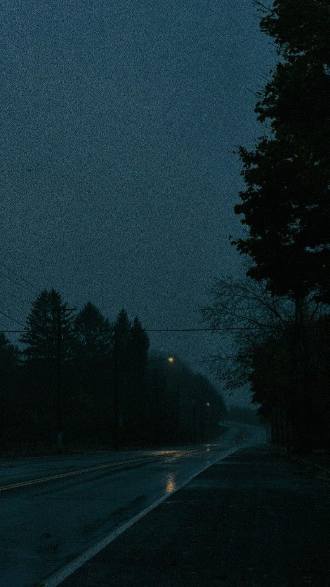 | Ese camión no iba para Durango . . . |
| Virtualcore |
|
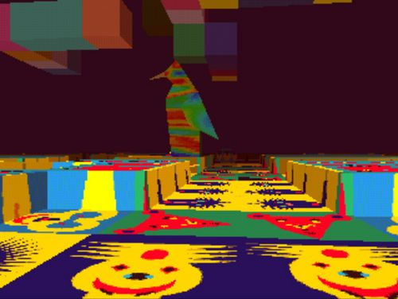 | Apaga los hacks. |
| Vaporwave |
|
 |
V i v a l a v i d a l o k a . |
| Golden Hour |
|
 |
Ya métete a tu casa. |
| Y2K |
|
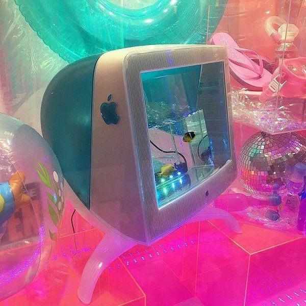 | El futuro se acabó. |
Tras quedar a gusto haciendo la lista pasada, toca lo siguiente en requerimientos, hacer una lista de películas que me gustan y de las que, dándome cuenta, tengo un gusto enormemente vago como resultado de una cultura fílmica increíblemente escasa:
Y ahora tocan las comidas favoritas en una lista desordenada:
| Personaje | Así se ve wacha | Razones por las que es buen personaje |
|---|---|---|
| Saitama | 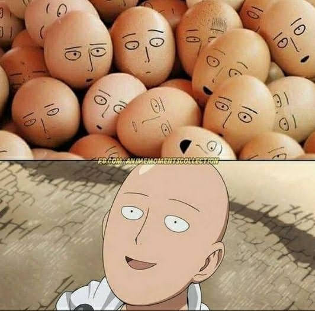 | Le gana a Goku. |
| Gintoki |  |
Es como Saitama pero a merced de la trama. |
| Alita | 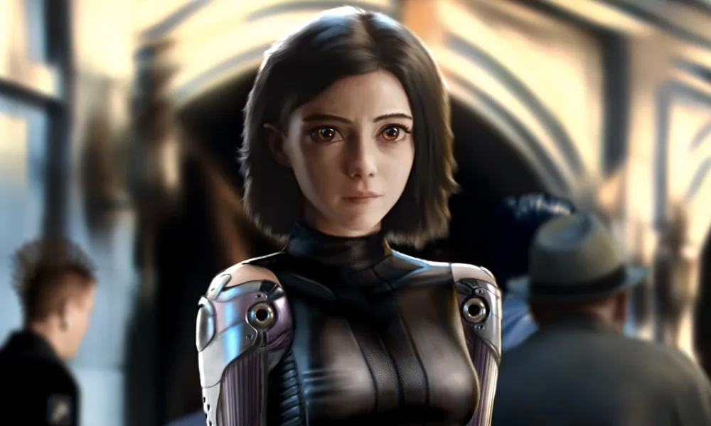 | Le sobra lore y está OP |
| Don Ramón | 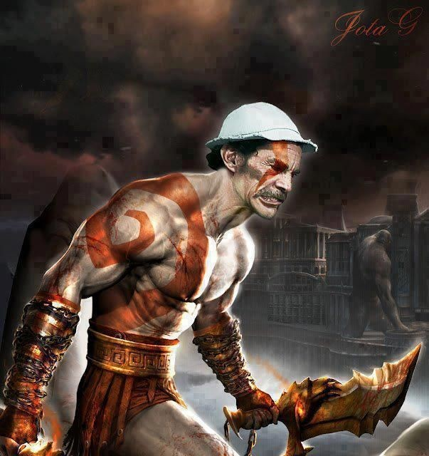 | Ha resistido contra Doña Florinda, Quico, el Chavo, el de la renta y a los cancela-culturas |
| Patricio (el og) | 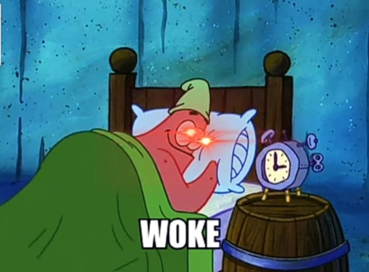 | Pico de la cultura cómica de 1999. |
| General Grievous (el de Clone Wars) |
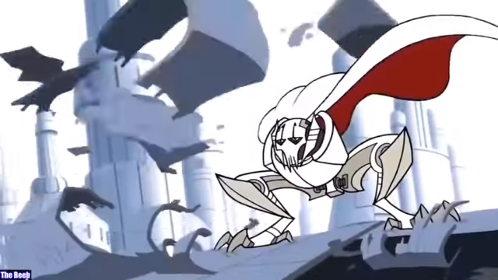 | OP hasta antes de la Venganza de los Sith. |
| Calamardo | 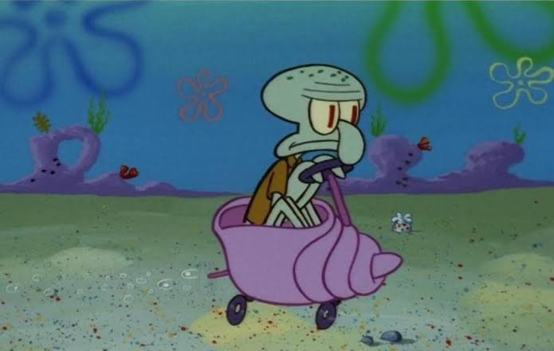 | Sigue sus sueños y pintó una célula verde. |
PMi canción favorita es Money Run Low de la banda de pop rock The Score: Canción uff